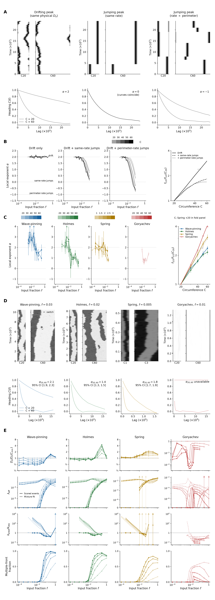

Generated 2026-10-23T13:03:14.134842+00:00; producer finished.
Figure 4 now normalizes physical drift by the smallest size at the same input and estimates jump angles from scorable events. The existing 915,757 counted replacements include 321,423 scored angles. Event-based closure is estimable in 154 conditions; 57 are within 15% of observed decay. Among conditions with multiple fronts for most frames, 0/33 event-based and 3/33 detector-free comparisons are within 15%. The decomposition therefore retains its failures in the regime it seeks to explain. No new simulations were run.
Revised manuscript outline · Figure 4 and legend · Supplement

A. Simulated drifting and relocating peaks on small and large rings. Grayscale kymograph widths follow circumference and time increases upward; each pair shares its declared seed. Ensemble heading autocorrelations below use small-ring solid and large-ring dotted curves. Fixed physical drift, same-rate relocation and perimeter-rate relocation give size exponents 2, 0 and −1, respectively.
B. Simulated mixtures illustrate how relocation erodes a geometric size advantage. Input fraction is f; the illustrative dependences are Dₛ = 8.8f² and λ = 135f⁴, with perimeter-rate relocation multiplying λ by C/40. The decay rate is k(ℓ) = −ln C(ℓ)/ℓ; α is minus the local slope of ln k against ln circumference. Noise tolerance f½ is the first downward crossing of correlation 0.5 at the fixed reference lag. Gray shades encode increasing circumference. Line styles distinguish mixtures in the tolerance-fold panel; its dashed guide is proportional to circumference.
C. Local exponents use model hues and light-to-dark circumference ramps. Markers show designed inputs, open markers identify forced conditions, vertical intervals show pointwise 95% uncertainty, and outward triangles mark off-scale values or tails. The right panel shows tolerance folds with model-specific markers; Spring circumference is multiplied by 20. 125/260 neighborhoods resolve; Goryachev contributes 11. Largest-size tolerance folds are Wave-pinning 2.373, Holmes 2.155, Spring 3.088, Goryachev 4.122.
D. Matched first-replicate model histories use the selected designed inputs, with physical widths and shared grayscale activity scales within each model. Black outside ticks identify persistent dominant-region replacements. The ensemble curves below include end-to-end exponents and 95% intervals where estimable. At every selected input, small-ring reference-lag correlation is below 0.4 and large-ring correlation exceeds 0.6; the enlarged rings retain heading longer.
E. Drift is normalized by its value at the smallest size at the same input (C = 20, or Spring 1); unity is the equal-physical-drift expectation giving α = 2. Rows below show effective jump rate, predicted/observed heading decay and multiple-front fraction. Solid curves and pointwise whole-seed intervals use counted replacement rate times mean angular loss among scorable events; dashed curves use the existing detector-free wrapped-Gaussian/uniform mixture at the shortest cadence. Unscorable events remain in the rate and exposure; their angles are represented by the scorable-event mean, with coverage and missing-angle bounds in the supplement. The jump-rate ordinate includes zero on a symmetric-log scale; open points identify forced conditions, and triangles retain off-scale ratios. Detector-free curves are point estimates. Predicted rates lie within 15% of observed rates in 57 of the 154 estimable conditions. In the multiple-front-majority regime, 0/33 event-based predictions and 3/33 detector-free predictions are within 15%. Agreement at weak input therefore does not establish closure as fronts multiply. Native model clocks remain separate, and multiple-front fractions are descriptive.
Methods and all regime-specific results · Preservation receipt